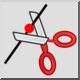

Toolbar / Icon:

Menu: Modify > Divide
Shortcut: D, I
Commands: divide | di
Description
Divides entities into two separate entities.
Usage
Choose the entity you want to divide.
Set the dividing point using the mouse. The dividing point is usually the
intersection point with another entity. Choose the intersection snap mode to
automatically snap to intersections.